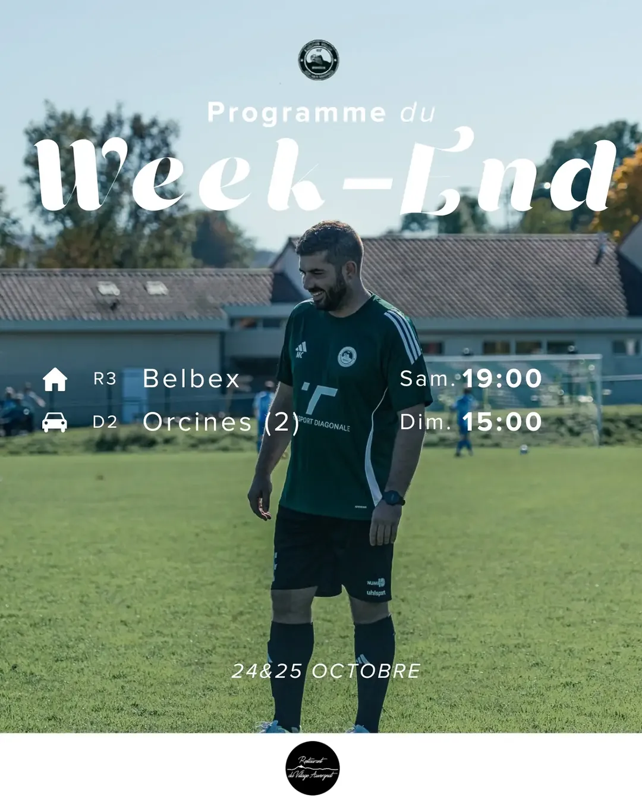
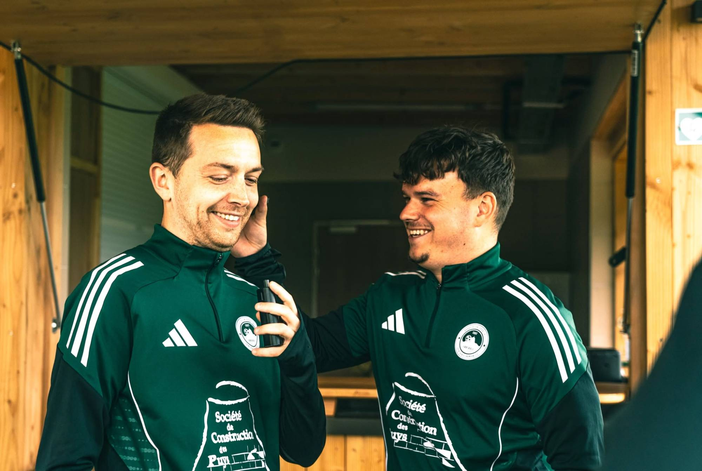
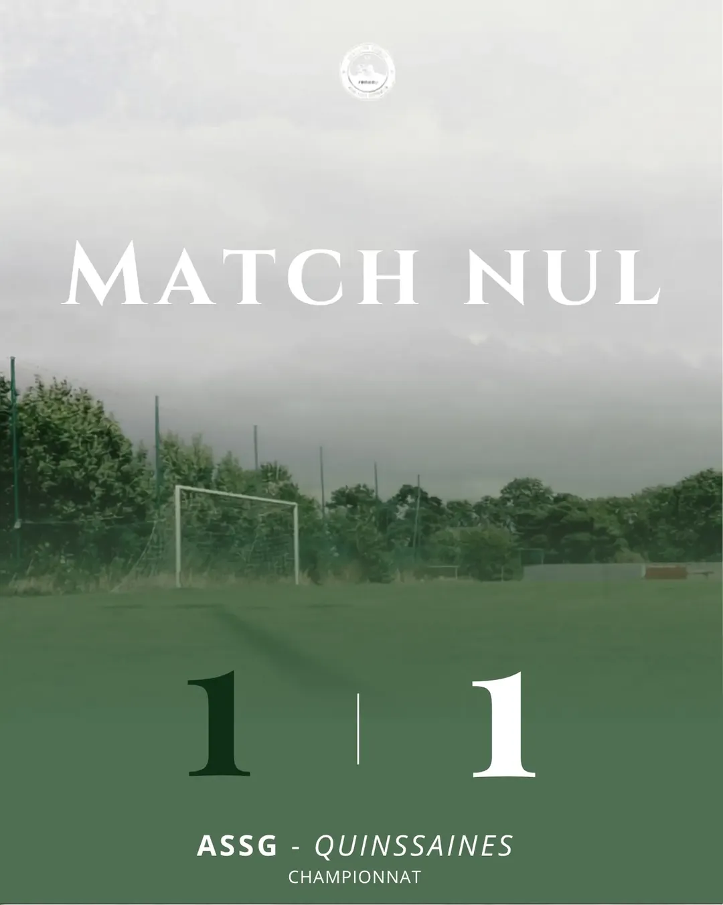

AS Saint-Genès-Champanelle · Puy-de-Dôme · Depuis 1987
Un club, une commune, une passion.
Résultats, calendrier, actualités et catégories du club de football, du district jusqu'au niveau régional.
Le calendrier des matchs
Actualité du club
Programme du week-end
Résultats et classements
Saison 2026 – 2027 · Mis à jour le
En images

Portez les couleurs du club
Le vert et blanc se porte aussi en dehors du terrain. Retrouvez les tenues de l'ASSG dans la boutique officielle du club chez adidas.

Nos catégories

Le stade municipal, la maison des Vert et Blanc
Route de Pardon, à Saint-Genès-Champanelle, au pied du puy de Dôme. Venez encourager nos équipes un jour de match.
À venir au stade
Le club
Fiers de nos couleurs depuis 1987
L'AS Saint-Genès-Champanelle réunit toute une commune autour du football. Son blason garde la silhouette du puy de Dôme et ses deux trèfles, et ses équipes défendent le vert et blanc du district jusqu'au niveau régional.
- Fondation
- 1987
- Couleurs
- Vert et blanc
- Stade
- Stade municipal, route de Pardon
- N° d'affiliation FFF
- 524952
Restons en contact
Rejoignez le club
Joueur, joueuse, éducateur, bénévole ou partenaire : écrivez-nous sur Facebook ou passez nous voir au stade un jour de match.